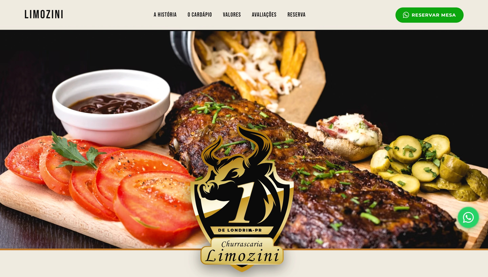
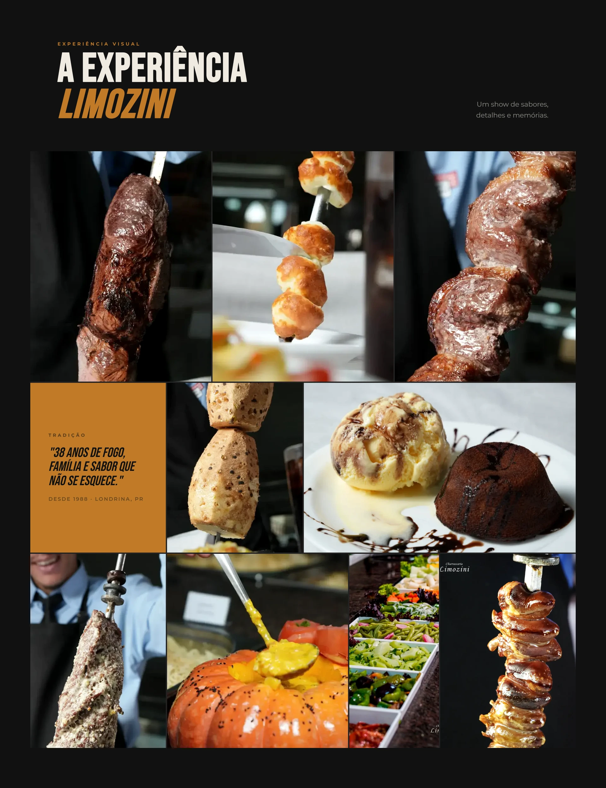

Atmosfera primeiro
A abertura em vídeo coloca a experiência do restaurante antes dos detalhes. A marca aparece dentro de um cenário, não isolada em um bloco institucional.
UI / UX
Design & desenvolvimento
Landing page
Uma experiência que começa antes da mesa.

AmpliarO ponto de partida
A Limozine precisava apresentar mais do que um cardápio. História, rodízio, avaliações, valores e reserva fazem parte da decisão de visitar a churrascaria.
A página usa uma abertura fotográfica forte e uma sequência editorial para construir desejo, depois reduzir a distância até a ação prática.
A abertura em vídeo coloca a experiência do restaurante antes dos detalhes. A marca aparece dentro de um cenário, não isolada em um bloco institucional.
A origem da Limozine e a passagem por cardápio, valores e avaliações dão densidade à promessa antes do pedido de reserva.
Delivery, WhatsApp e formulário de reserva aparecem no percurso. Cada ação tem um contexto e um próximo passo identificável.

AmpliarVer a página completa Página completa composta a partir de capturas reais das seções visíveis, para preservar o conteúdo animado.
Desenvolvimento
A landing page organiza uma narrativa longa em seções com navegação própria: a história, o cardápio, valores, avaliações e reserva.
O caminho de reserva aparece no header e no percurso da página. A implementação mantém a ação visível e encaminha o pedido ao canal da casa, sem simular um checkout dentro do caso.
O trabalho apresentado é a página e sua arquitetura de informação. Depoimentos, preços e alegações presentes no site pertencem à comunicação do restaurante; não são métricas atribuídas ao portfólio.